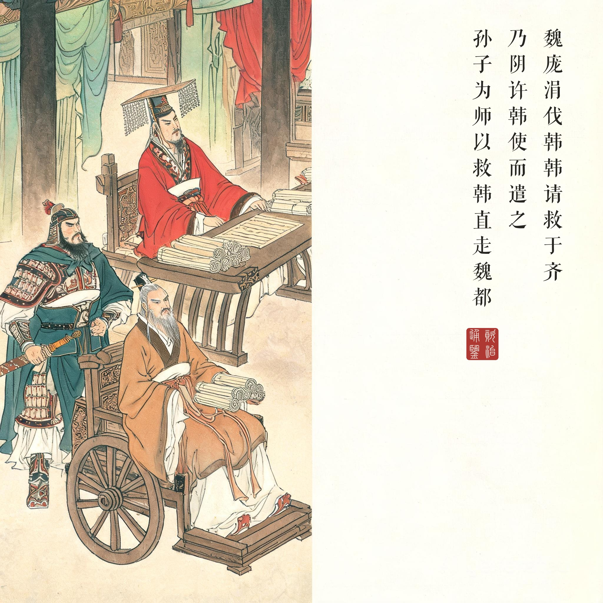
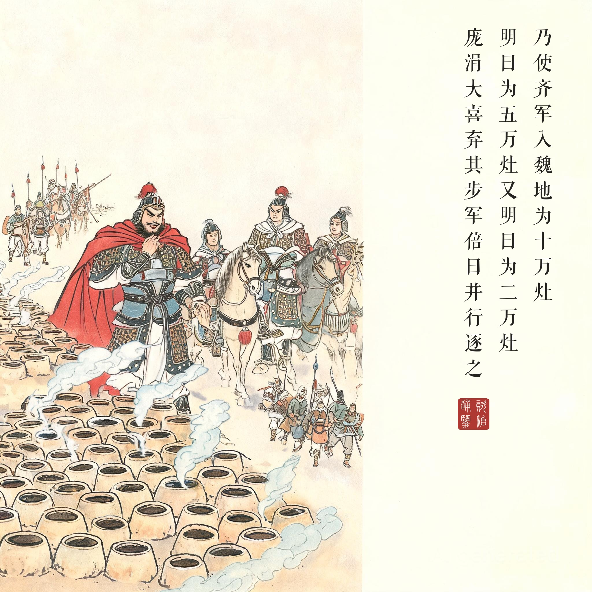
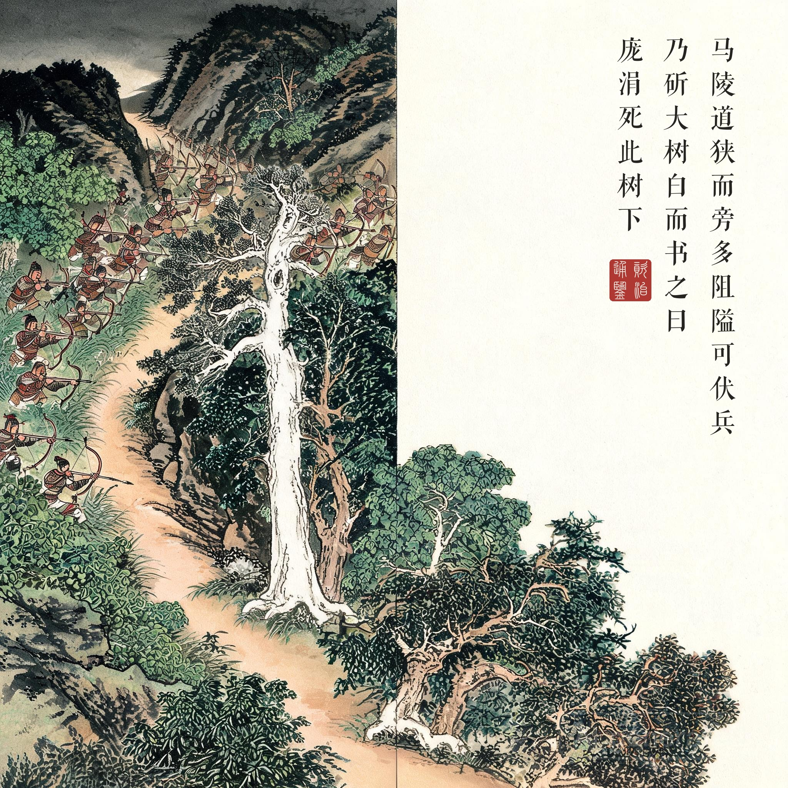
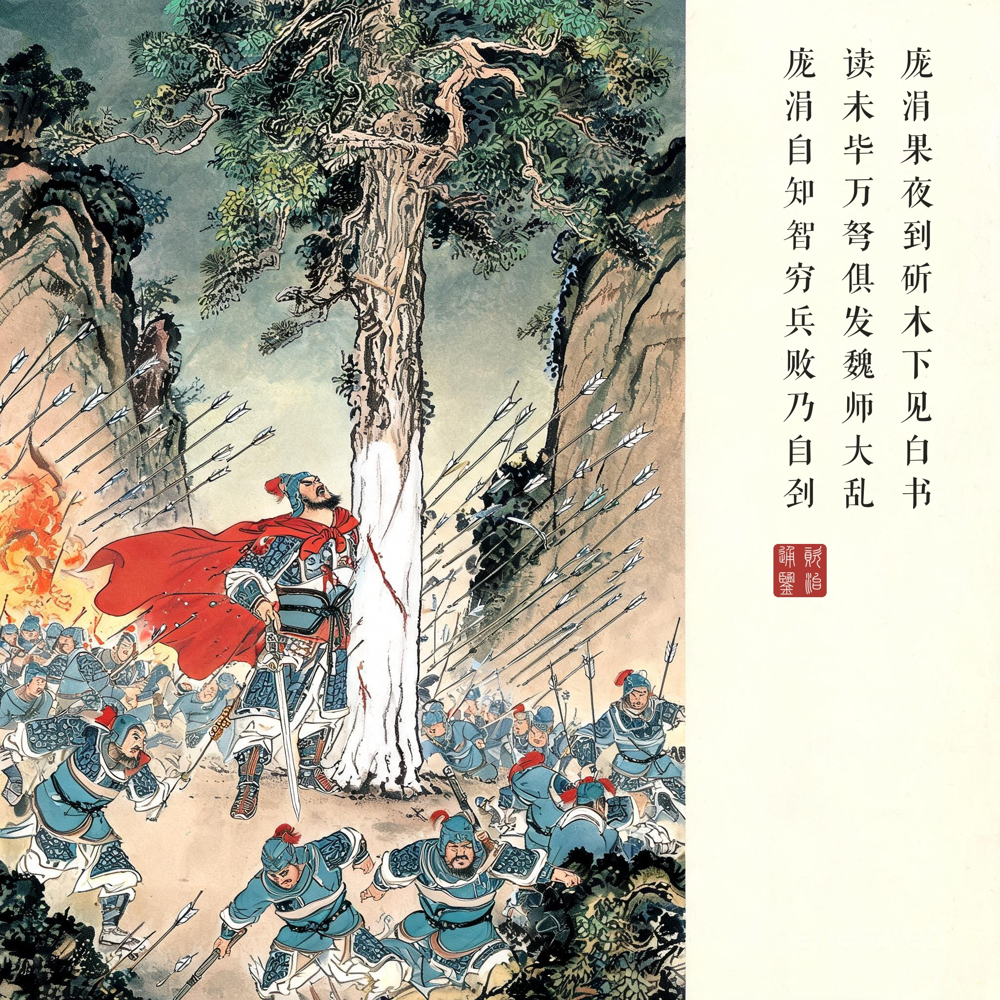

《资治通鉴 · 卷第二 · 周纪二》显王二十八年（公元前 341 年）
（据 daizhigev20《资治通鉴》底本节录）
魏庞涓伐韩。韩请救于齐。齐威王召大臣而谋曰："蚤救孰与晚救？"……孙膑曰："夫韩、魏之兵未弊而救之，是吾代韩受魏之兵……且魏有破国之志，韩见亡，必东面而愬于齐矣。吾因深结韩之亲而晚承魏之弊，则可受重利而得尊名也。"王曰："善！"乃阴许韩使而遣之。韩因恃齐，五战不胜，而东委国于齐。齐因起兵，使田忌、田婴、田盼将之，孙子为师，以救韩，直走魏都。庞涓闻之，去韩而归。
孙子谓田忌曰："彼三晋之兵素悍勇而轻齐，齐号为怯。善战者因其势而利导之。《兵法》：'百里而趣利者蹶上将，五十里而趣利者军半至。'"乃使齐军入魏地为十万灶，明日为五万灶，又明日为二万灶。庞涓行三日，大喜曰："我固知齐军怯，入吾地三日，士卒亡者过半矣！"乃弃其步军，与其轻锐倍日并行逐之。
孙子度其行，暮当至马陵。马陵道狭而旁多阻隘，可伏兵。乃斫大树，白而书之曰："庞涓死此树下！"于是令齐师善射者万弩夹道而伏，期日暮见火举而俱发。庞涓果夜到斫木下，见白书，以火烛之。读未毕，万弩俱发，魏师大乱相失。庞涓自知智穷兵败，乃自刭，曰："遂成竖子之名！"齐因乘胜大破魏师，虏太子申。
魏国庞涓攻打韩国，韩国向齐国求救。齐威王问大臣："早救好还是晚救好？"孙膑说："韩魏之兵还没疲惫就去救，等于我们替韩国挨魏国的刀……魏国存心灭韩，韩国看到亡国在即，必然东来哀告齐国。我们借机深结韩国的感激，又晚一点承接魏军的疲惫，可以收重利、得尊名。"威王说好，于是暗地许诺韩国使者，送他回去。韩国仗着齐国会来救，五战五败，把国运整个托付给齐国。齐国这才起兵，派田忌等人为将、孙膑为军师救韩，却直奔魏国都城。庞涓听到消息，立刻从韩国撤军回救。
孙膑对田忌说："三晋的兵向来剽悍而轻视齐国，说齐军胆怯。会打仗的人就要顺着这个势引导它。兵法讲：'百里奔袭的会折损上将，五十里奔袭的只有一半人能到。'"于是让齐军进入魏境后第一天造十万人用的灶，第二天五万，第三天二万。庞涓追行三日大喜："我本来就知道齐军怯懦，进我国土才三天，士兵就逃亡过半了！"丢下步兵，率轻装精锐日夜兼程猛追。
孙膑估算庞涓的行程，黄昏当到马陵。马陵道路狭窄、两旁多险隘，可以设伏。他让人砍削道旁大树，在露出的白木上写："庞涓死此树下！"再命令万名善射的齐军弩手夹道埋伏，约定黄昏见到火光便万箭齐发。庞涓果然夜里赶到树下，见白木有字，举火照读——还没读完，万弩齐发，魏军大乱四散。庞涓自知智穷兵败，自刎而死："竟成全了这小子的名声！"齐国乘胜大破魏军，俘虏了太子申。
减灶是一道算术题。十万灶、五万灶、二万灶——孙膑给庞涓出的不是计，是一道庞涓"自己会做错"的算术题。齐军素称怯懦，是三晋的刻板印象；灶坑逐日锐减，是"逃亡过半"的物证。庞涓不是败给了弩箭，是败给了他自己的傲慢替对手完成了推理——所以孙膑说"善战者因其势而利导之"。同门恩怨（《史记》载庞涓妒孙膑之能而刖其足）更为这一箭之仇添了底色，但《通鉴》叙事冷静克制，只写"遂成竖子之名"五字遗言，把恩怨留给了读者。
写在树上的死刑判决。"庞涓死此树下"是中国战争史上最著名的战场书写——把预言先写好，再等它应验。连环画表现这一幕有个天然的难题：我们的规矩是底图无字、题款全部程序合成（模型直书必乱），所以画中大树只作"白而书之"——剥皮刷白、不着一字；那句判词，恰恰就竖在画的右上角，作为题款与画中白木遥相呼应：树上是白的，纸上是真的。
一战的分量。马陵之后，魏国太子被俘、精锐尽丧，百年霸业就此折断；齐国接棒称雄，战国格局从"魏独强"转入"齐秦并帝"时代。本回与第二回构成一组对读：商鞅立的是"信"，孙膑用的是"诈"——同在《通鉴》开卷前五十年，一个国家靠制度立身，一支军队靠人心设局，司马光把这两种智慧并置给后来者看。